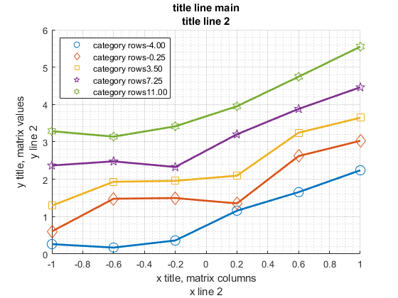
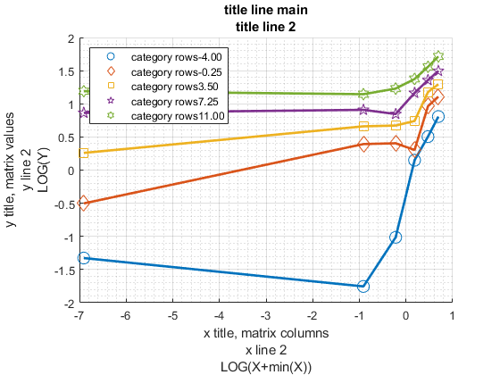
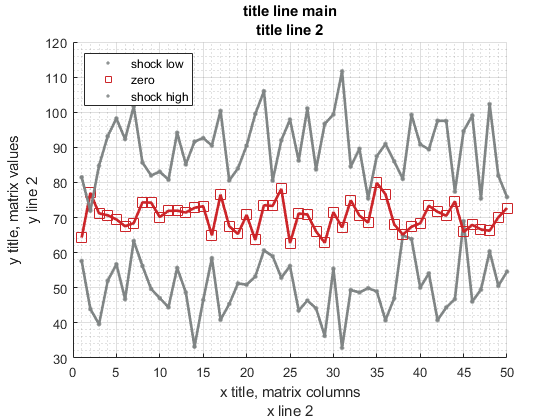
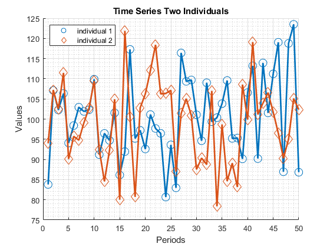
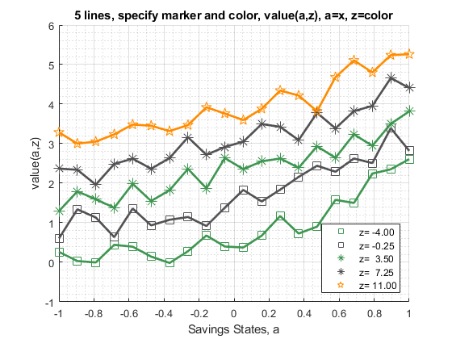

Chapter 3 Graphs
3.1 FF_GRAPH_GRID Examples: X, Y and Color Line Plots
Go back to fan’s MEconTools Toolbox (bookdown), Matlab Code Examples Repository (bookdown), or Math for Econ with Matlab Repository (bookdown).
This is the example vignette for function: ff_graph_grid from the MEconTools Package. This function can graph out value and policy functions given one state vector (x-axis), conditional on other states (line groups). Can handle a few lines (scatter + lines), or many groups (jet spectrum).
3.1.1 Test FF_GRAPH_GRID Defaults
Call the function with defaults.
ff_graph_grid();

3.1.2 Test FF_GRAPH_GRID Random Matrix Pick Markers and Colors
Call the function with defaults.
rng(123);
mt_value = [normrnd(50,10,[1, 50]); ...
normrnd(70,5,[1, 50]);...
normrnd(90,10,[1, 50])];
ar_row_grid = ["shock low", "zero", "shock high"];
ar_col_grid = 1:50;
mp_support_graph = containers.Map('KeyType', 'char', 'ValueType', 'any');
mp_support_graph('cl_scatter_shapes') = { '.', 's' ,'.' };
mp_support_graph('cl_colors') = {'gray', 'red', 'gray'};
ff_graph_grid(mt_value, ar_row_grid, ar_col_grid, mp_support_graph);
3.1.3 Test FF_GRAPH_GRID Two Random Normal Lines and Labels
There are two autoregressive time series, plot out the time two time series.
% Generate the two time series
rng(456);
mt_value = normrnd(100,10,[2, 50]);
ar_row_grid = ["individual 1", "individual 2"];
ar_col_grid = 1:50;
mp_support_graph = containers.Map('KeyType', 'char', 'ValueType', 'any');
mp_support_graph('cl_st_graph_title') = {'Time Series Two Individuals'};
mp_support_graph('cl_st_ytitle') = {'Values'};
mp_support_graph('cl_st_xtitle') = {'Periods'};
mp_support_graph('bl_graph_logy') = false; % do not log
ff_graph_grid(mt_value, ar_row_grid, ar_col_grid, mp_support_graph);
3.1.4 Test FF_GRAPH_GRID 6 Lines Pick Marker and Colors
Plot many lines, with auto legend.
% Generate some Data
rng(456);
ar_row_grid = linspace(-4, 11, 5);
ar_col_grid = linspace(-1, 1, 20);
rng(123);
mt_value = 0.2*ar_row_grid' + exp(ar_col_grid) + rand([length(ar_row_grid), length(ar_col_grid)]);
% container map settings
mp_support_graph = containers.Map('KeyType', 'char', 'ValueType', 'any');
mp_support_graph('cl_st_graph_title') = {'5 lines, specify marker and color, value(a,z), a=x, z=color'};
mp_support_graph('cl_st_ytitle') = {'value(a,z)'};
mp_support_graph('cl_st_xtitle') = {'Savings States, a'};
mp_support_graph('st_legend_loc') = 'southeast';
mp_support_graph('bl_graph_logy') = false; % do not log
mp_support_graph('st_rowvar_name') = 'z=';
mp_support_graph('it_legend_select') = 3; % how many shock legends to show
mp_support_graph('st_rounding') = '6.2f'; % format shock legend
mp_support_graph('cl_scatter_shapes') = {'s', 's', '*', '*', 'p'};
mp_support_graph('cl_colors') = {'green', 'black', 'green', 'black', 'orange'};
% Call function
ff_graph_grid(mt_value, ar_row_grid, ar_col_grid, mp_support_graph);
3.1.5 Test FF_GRAPH_GRID Many Lines
Plot many lines, with auto legend.
% Generate some Data
rng(456);
ar_row_grid = linspace(-4, 11, 100);
ar_col_grid = linspace(-1, 1, 1000);
rng(123);
mt_value = 0.2*ar_row_grid' + exp(ar_col_grid) + rand([length(ar_row_grid), length(ar_col_grid)]);
% container map settings
mp_support_graph = containers.Map('KeyType', 'char', 'ValueType', 'any');
mp_support_graph('cl_st_graph_title') = {'value(a,z), a=x, z=color'};
mp_support_graph('cl_st_ytitle') = {'value(a,z)'};
mp_support_graph('cl_st_xtitle') = {'Savings States, a'};
mp_support_graph('st_legend_loc') = 'southeast';
mp_support_graph('bl_graph_logy') = false; % do not log
mp_support_graph('st_rowvar_name') = 'z=';
mp_support_graph('it_legend_select') = 3; % how many shock legends to show
mp_support_graph('st_rounding') = '6.2f'; % format shock legend
mp_support_graph('cl_colors') = 'jet'; % any predefined matlab colormap
% Call function
ff_graph_grid(mt_value, ar_row_grid, ar_col_grid, mp_support_graph);3.1.6 Test FF_GRAPH_GRID Many Lines Legend Exogenous
Plot many lines, exogenously set legend
% Generate the two time series
rng(456);
ar_row_grid = linspace(-4, 11, 15);
ar_col_grid = linspace(-1, 1, 100000);
rng(123);
mt_value = 0.2*ar_row_grid' - exp(ar_col_grid) + rand([length(ar_row_grid), length(ar_col_grid)]);
% setting shock vector name exogenously here
ar_row_grid = string(num2str(ar_row_grid', "shock=%6.2f"));
% container map settings
mp_support_graph = containers.Map('KeyType', 'char', 'ValueType', 'any');
mp_support_graph('cl_st_graph_title') = {'value(a,z), a=x, z=color'};
mp_support_graph('cl_st_ytitle') = {'value(a,z)'};
mp_support_graph('cl_st_xtitle') = {'Savings States, a'};
mp_support_graph('st_legend_loc') = 'eastoutside';
mp_support_graph('bl_graph_logy') = false; % do not log
mp_support_graph('it_legend_select') = 15;
mp_support_graph('cl_colors') = 'winter'; % any predefined matlab colormap
% Call function
ff_graph_grid(mt_value, ar_row_grid, ar_col_grid, mp_support_graph);